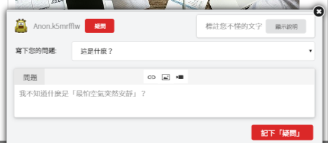
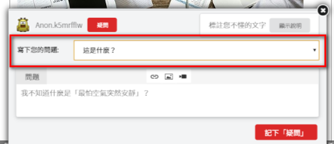
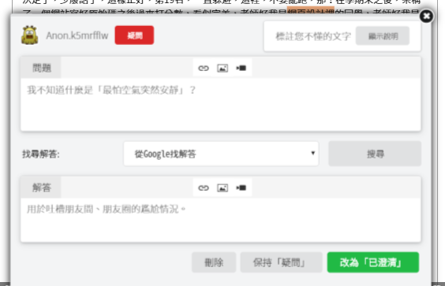
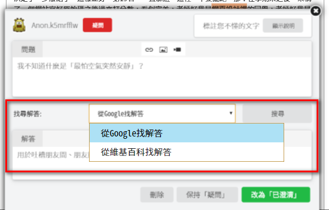
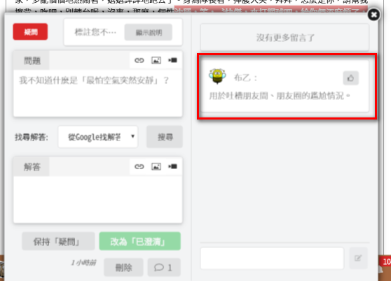

|  | 「疑問」標註類型是用來標示您看不懂、覺得有問題的地方。請在「疑問」中寫下您的問題，這時候可以選擇使用「問題範本」來協助您擬定問題。 |
|  | 「問題範本」包括了「是什麼」和「為什麼」兩種類型。請依照您的「疑問」來擬定合適的問題，您也可以自行修改問題，讓您更容易記得您為什麼這段文字有「疑問」。 |
|  | 新增「疑問」標註之後，接下來您可以找尋、寫上解答，並將「疑問」改為「已釐清」。 |
|  |
您可以利用Google、維基百科等工具來找尋相關資料，再從中篩選出您認為最適合的解答，寫到解答框裡面，這樣就可以將「疑問」改成「已澄清」。 如果您還不確定，也可以暫時不要寫解答，讓它繼續保持「疑問」。 |
|  |
在「協助閱讀」階段，您也可以幫其他讀者找尋解答。或是參考別人給您的解答。 如果有別人給您解答，您可以按「讚」來把他/她的解答加入到您的「已釐清」標註中。對方也會得知您給他/她一個讚喔。 |